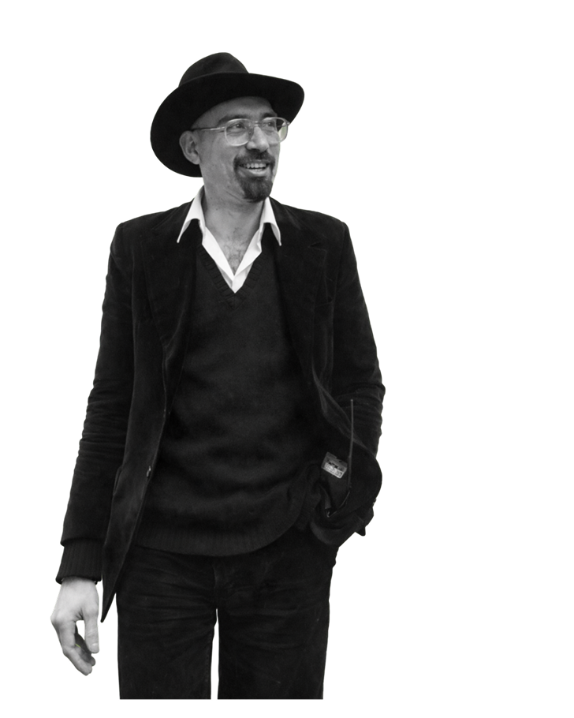

In collaboration with
Dan Turèll

Dan Turèll (1946–1993), known as "Onkel Danny" (Uncle Danny), was a highly popular and prolific Danish author, poet, and journalist. Known for his distinctive style, including black-painted nails, he wrote nearly 100 books, including the famous Vangedebilleder (1975) and a popular crime series. He is celebrated for chronicling urban life, particularly in Copenhagen.
Follow Dan Turèll in his footsteps